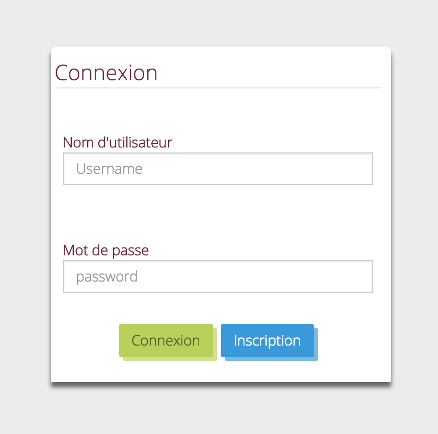
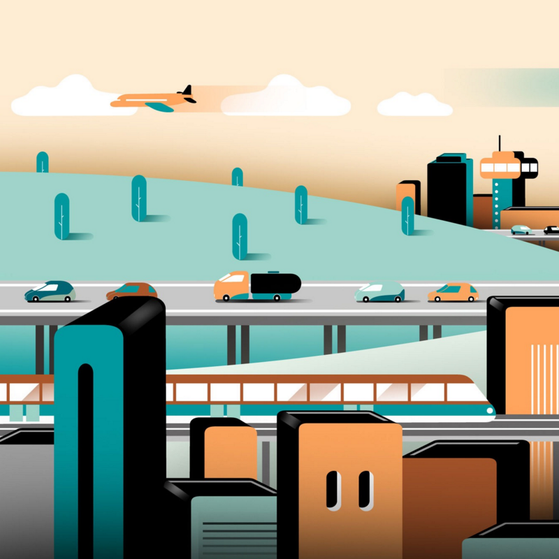
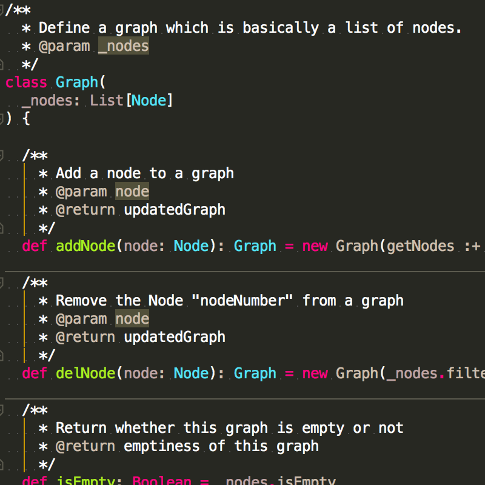
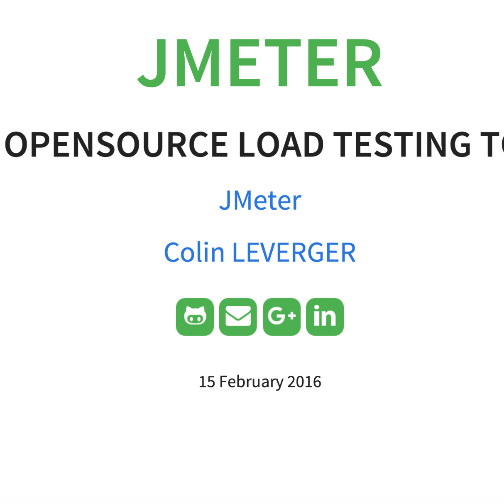
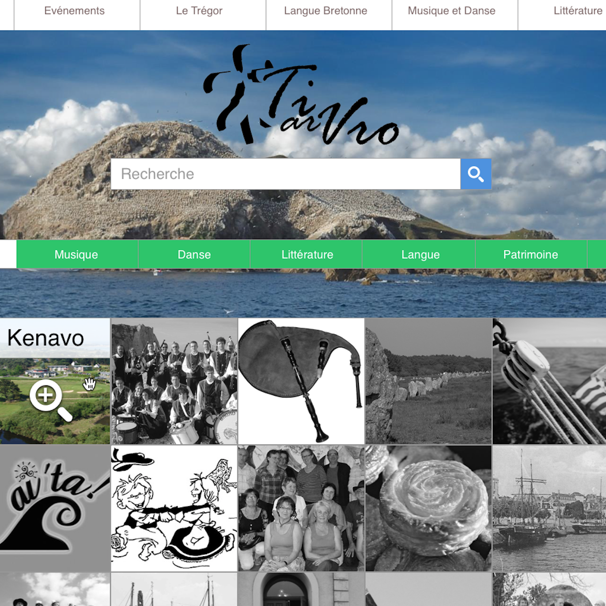
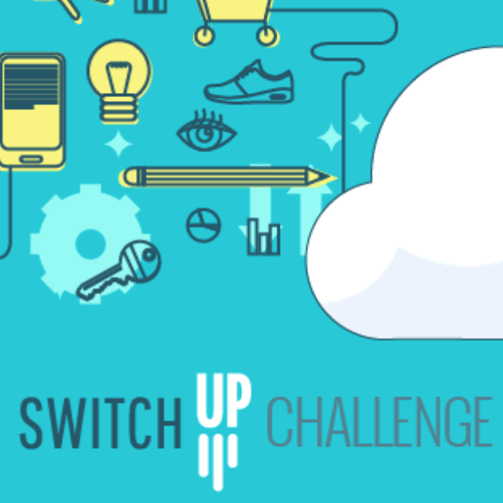
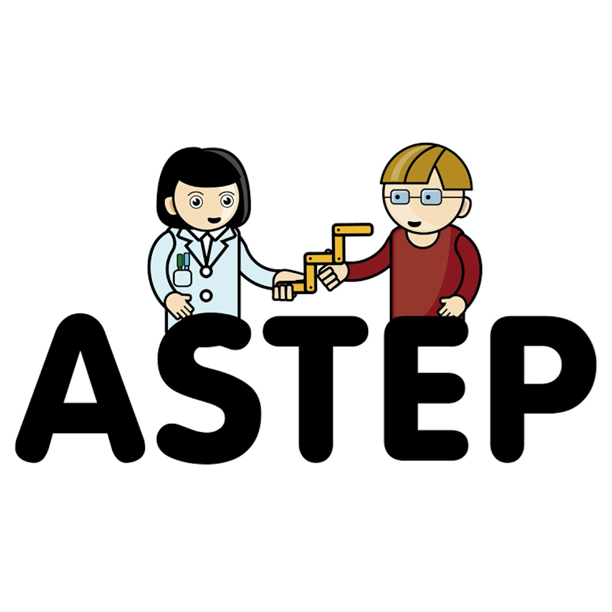
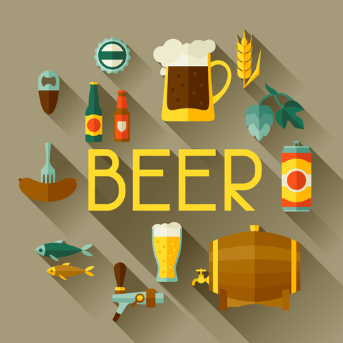
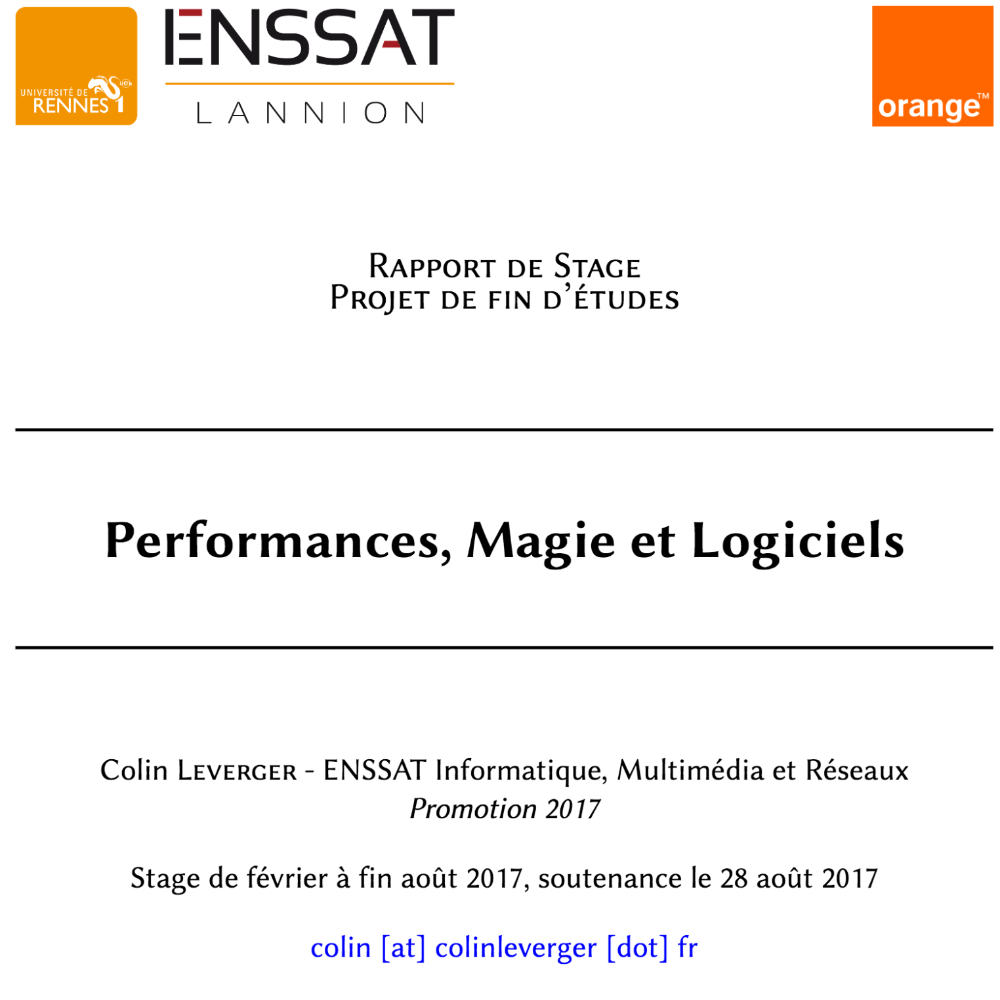

I am a young engineer & a Ph.D. student, and you are welcome to my web-portfolio.
I currently work as a Ph.D. student at the Orange company, in collaboration with INRIA labs (LACODAM). In the context of servers & infrastructure performances, I manipulate Time Series datasets to do forecasts, predictions, correlations analysis... I code Machine Learning algorithms and user interfaces to improve the Capacity Planning at Orange.
I talk Scala, I am DevOps, I love CI, FP, Ansible/Jenkins/Docker, I build tested & stable software.
You will find on this website some information about me, my skills, and about some of my projects.
25 y-o
Paris - France
Guitarist / Singer / Music player & producer
Regular runner, occasional swimmer, love long hikes and nature activities
2017 - 2020: Ph.D. student at Rennes 1 University
mid-2016 - 2017: ERASMUS in Roskilde University, Denmark
2014 - 2017: student at the engineering school ENSSAT Lannion - Computing Science
2012 - 2014: D.U.T GEII Rennes (Technical Degree in Electronics & Computing Sciences)
Coursera:
Scala specialisation,
Google Cloud Platform
specialisation,
Recommender systems
edX:
Introduction
to OpenStack
FUN MOOC:
Fondamentaux pour
le Big Data
2017: China, Italy, Croatia, Slovenia, etc.
2016: Japan (15 days), Lisboa (7 days), Ireland (10 days), Denmark (5 months)
2015: Scotland, Glasgow (30 days)
2014: Ireland (3 months), Athlone AIT during an internship
& many others. . .
French: native
English: fluent & good technical skills (B2 level)
Spanish: basic knowledge
Danish: basic knowledge
Functional programming: Scala, 3 years experience, daily use. Followed the Scala specialisation on Coursera.
Git: Daily use, advanced workflow (branch, checkout, tags, ...).
Object-oriented programming: Java, 4 years experience, several projects.
Web: PHP, HTML5 / CSS3, JavaScript, Wordpress, Scala Play, JEE.
C: robust experience (loop invariant, strict methodology & concepts, graphs).
Databases: SQL (MySQL, PostgreSQL...) / NoSQL (MongoDB) / Time Series databases (influxDB)
2018: C. Leverger, V. Lemaire, S. Malinowski, T. Guyet and L. Rozé, "Day-ahead time series forecasting : application to capacity planning.", in AALTD workshop ECML 2018. [PDF] [LINK]
2018: C. Leverger, R. Marguerie, V. Lemaire, T. Guyet, and S. Malinowski, "PerForecast : un outil de prévision de l'évolution de séries temporelles pour le planning capacitaire.", in EGC 2018, vol. RNTI-E-34, pp.455-458. [PDF] [LINK]
2018: Python programing (master one students)
at ENSAI Engineering School, Bruz.
Lab assistant for 33 hours.
Lead professor: Romaric Gaudel.
2018: GEN: Initiation au génie logiciel (bachelor students)
at ISTIC Rennes 1.
Lab assistant for 40 hours.
Lead professor: Thomas Genet.
2017: PW: Web development (bachelor students)
at ISTIC Rennes 1.
Lab assistant for 14 hours.
Lead professor: Virginie Sans.
Click on a project to learn more!

Website coded using CodeIgniter, PHP, Javascript / AJAX.
IDs to play: USERNAME: bvozel, PASSWORD: servicesENSSAT

Use of UML and UP methodologies to design a fictive application.
The product is an app which will rationalize the means of transports in a city.

Use of Scala, SBT and Git. Tests provided in "src/test" (eh, we are not uncivilized here, just trying to do a little DevOps...)

Presentation & tutorial about JMeter: the basis.
Use of reveal.js / HTML.

Use of Sketch to design a website for an association.
In this project, the goal was more to think about choices of implementation & designs than coding the website itself.

Cisco innovation challenge. Main goal: think about society/environment problems, and imagine a product or a service to solve this problem. In three words: change the world!
Team of 6 persons from ENSSAT engineering school.

Management project at ENSSAT. I was teaching computing science at primary school. Group of ~25 children, from 8 to 10. We prepared our interventions during one year: exercises, pedagogy,...
Use of Scratch to give basis of programming.
Use of R to analyse a Dataset concerning the sinking of the Titanic. Machine Learning models used to predict the survivors of the crash.

Use of Scala to scrap a webpage containing data about beers. The goal is to learn how to scrap the web to create my own datasets.

Use of LaTeX to create templates from scratch for school reports & papers.